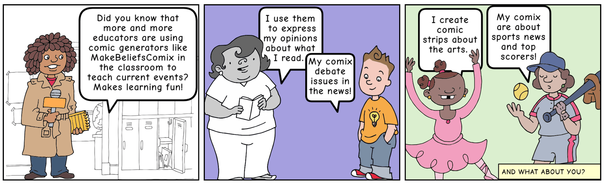
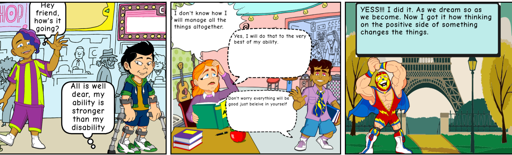

Scenariusz lekcji: Tworzenie powieści komiksowych
Cel lekcji: Uczenie się nowego słownictwa poprzez tworzenie
opowieści komiksowych
Metody: Tworzenie opowieści komiksowych, konwersacje w grupie,
praktyka pisania dialogów
Forma pracy: Indywidualna i zespołowa
Przebieg zajęć:
- Przedstawienie celu lekcji
-
Pokazanie uczniom, jak korzystać z aplikacji
MakeBeliefsComix.com
- Wybór tematu opowieści
-
Tworzenie komiksów - uczniowie pracują indywidualnie lub w
parach nad tworzeniem swoich opowieści komiksowych
- Uczniowie dzielą się swoimi pracami w grupie
- Podsumowanie zajęć

Scenariusz lekcji: Ćwiczenia w mówieniu publicznym
Cel lekcji: Ćwiczenie umiejętności mówienia publicznego poprzez
odegranie dialogów z komiksu
Ćwiczenia w mówieniu publicznym, praktyka aktorska
Forma pracy: Indywidualna, prezentacja przed grupą
Przebieg zajęć:
- Przedstawienie celu lekcji
-
Uczniowie tworzą swoje komiksy w apliacji MakeBeliefsComix.com
- Przygotowanie do prezentacji
- Wybrani uczniowie prezentują swoje komiksy przed klasą
- Podsumowanie zajęć